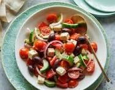

Easy Chopped Greek Salad
This refreshing summer salad is prepared in under 10 minutes and works well as an appetizer or as a side to a protein dish!
Serves 2-4
Ingredients
- 3 plum tomatoes
- 1 large cucumber
- 1/2 small red onion
- 1/2 c pitted black olives
- 1/2 c crumbled feta cheese
For the vinagrette...
- 6 tbsp extra virgin olive oil
- 2 tbsp fresh lemon juice
- 1 tsp red wine vinegar
- 1 tsp chopped garlic (approx. 1 clove)
- 1/2 tsp dried dill or 1 tsp fresh dill
- Salt and black pepper to taste
- 1 tsp vanilla extract

Steps
- Prepare: If tomatoes are refrigerated, remove them about 30-45 min before beginning preparation for the salad, as they taste best served at room temperature.
- Chop: Cut tomatoes, cucumber and onion into large bite sized chunks.
- Mix: Finely chop or grate the garlic. Then, mix all vinagraitte ingredients together in small bowl.
- Combine: Toss chopped vegetables from Step 1 with crumbled feta (reserve 3 tsp for serving) and olives. Pour vinaigrette dressing over and lightly toss to inorporate.
- Serve: Divide portions onto plate and top with sprinkle of leftover feta.
Adapted from Elise Bauer's recipe on the Simply Recipes blog .